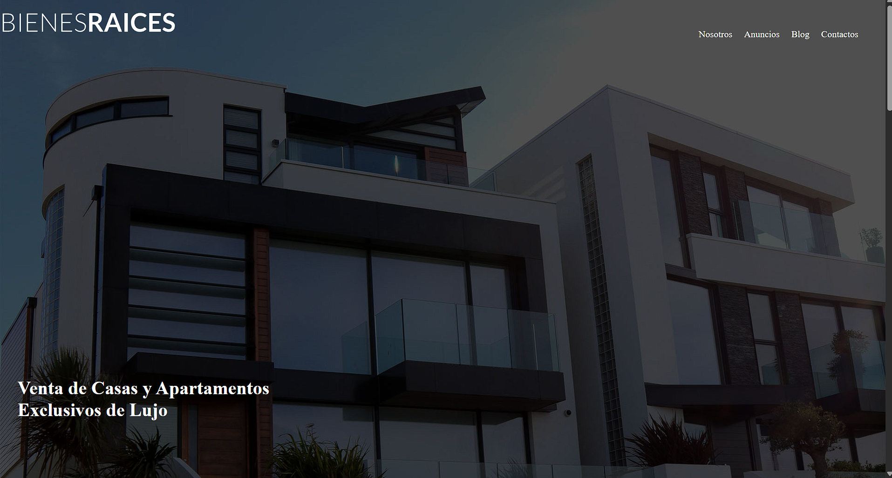
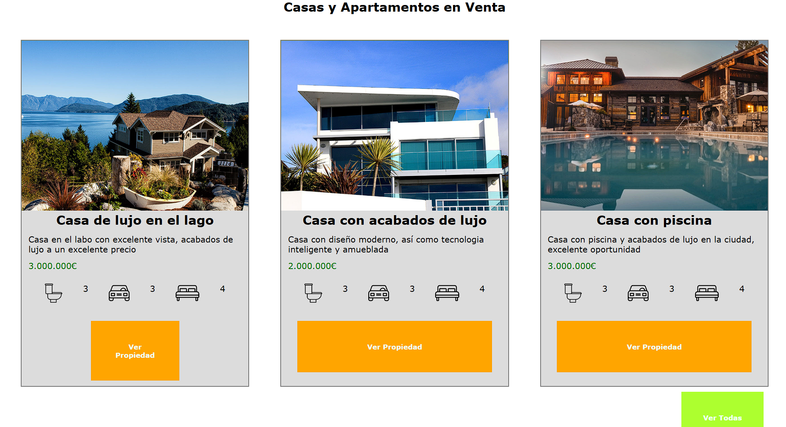
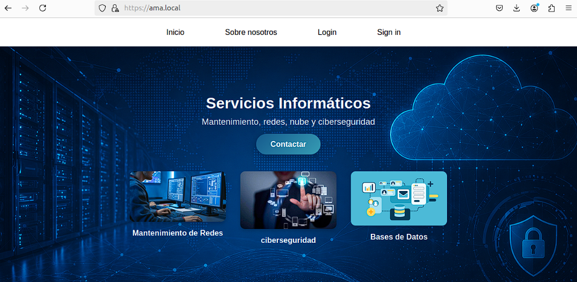

Projectes
Pàgina web HTML
El primer any del GM, vam fer servir HTML per fer una pàgina web d'una Inmobiliària



Aplicació Web HTML/SQL/PHP
Per acabar el segon any del GM, vam haver de fer una aplicació web on veníem un servei i la pàgina havia de ser capaç de registrar usuaris a una BBDD


Com crear un projecte web pas a pas
- Fer una pluja d'idees per a que surtin possiblees maneres de desenvolupar una pàgina web
- Escollir les idees i dissenyar-les en un esborrany per a tenir clar com pot quedar el projecte
- Escollir les tecnologies a utilitzar, com els llenguatges de programació
- Crear el projecte pas a pas i dissenyar-lo per donar-li apariència
- Fer proves de la pàgina comprovant:
- Que funcionen tots els enllaços
- Que apareguin totes les imatges
- Que els formularis funcionin
- Que funciona a mòvil i a diferents navegadors,...
- Corregir els errors i publicar el projecte final